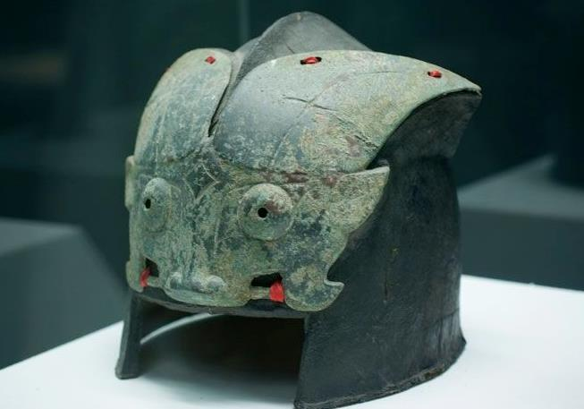

西周（前1046～前771年）
西周（前1046～前771年），中国历史上的朝代。公元前十一世纪周武王灭商，建国号为周，定都于镐（陕西长安沣河以东），周成王亲政后，营造新都成周（河南洛阳），宅兹中国、大封诸侯，还命周公东征、制礼作乐，加强了西周王朝的统治 [1] 。周成王、周康王统治期间，社会安定、百姓和睦、“刑错四十余年不用”，史称“成康之治”。周懿王继位后政治日趋腐败，国势不断衰落，由于西戎屡次进攻，被迫将都城迁犬丘（陕西兴平东南） [2-3] 。周厉王前后， 私有土地日益发展， 公元前841年的国人暴动预示着奴隶制危机的到来， 王权从此衰落。周宣王不籍千亩， 标志着井田制在王畿内的崩溃。公元前771年周幽王被犬戎和申侯杀死，次年周平王东迁洛邑。历史上把平王东迁之前称之为西周，西周从武王灭商到幽王亡国， 共传12王11代。 [4]
西周是我国奴隶社会的鼎盛时期， 社会生产力比之商代更加提高， 农业繁盛， 文化也进一步发展。宗法制和井田制是当时最基本的社会政治制度和经济制度。周王朝强盛时， 势力所及， 南过长江， 东北至今辽宁省， 西至甘肃省， 东到山东省。
